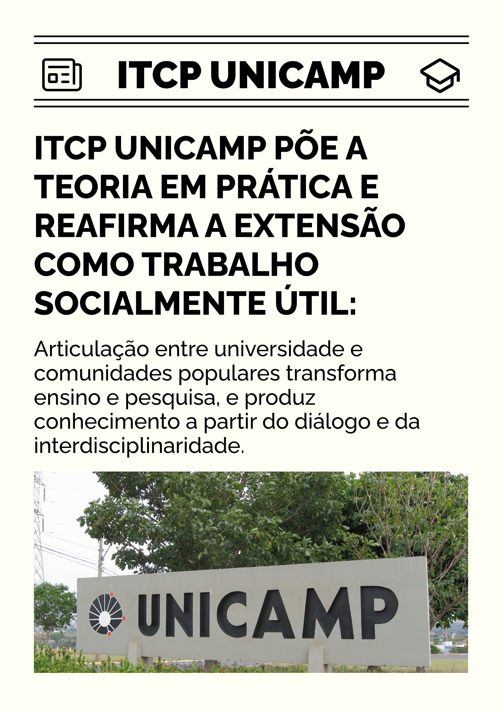

Projeto de profissionalização e organização do trabalho pedagógico da EPT integral e integrada
Os modelos de gestão baseados na racionalização apresentam limitações em proporcionar ao estudante o nível de consciência que discutimos anteriormente; eles se organizam a partir da fragmentação do indivíduo e da legitimação da apropriação privada. Apesar de oferecerem uma boa formação profissional, esses modelos nunca deixam escapar o fato de haver desigualdades na sociedade e no interior do próprio mercado de trabalho. Funcionam como reprodutores das hierarquias.
A escola politécnica conduz ao aprendizado político da profissão. Como se situa ainda em uma fase transitória, depara-se com a exigência de formar para a empregabilidade, para garantir a subsistência dos trabalhadores. No entanto, situa-se criticamente em relação à profissionalização, de modo a compreender a dinâmica do trabalho capitalista e, ao mesmo tempo, assumi-la como cumprimento de uma função social. O trabalhador politécnico compreende a realidade para transformá-la e tem consciência de seu papel na satisfação de necessidades coletivas, de toda a sociedade. Confira o artigo da Unicamp sobre extensão popular e seu impacto no ensino, na pesquisa e nas comunidades.

Título: Extensão Popular na universidade
Fonte: Prosa (2025d).
Elaboração: Prosa (2025d).
Assim, o processo pedagógico se desenvolve em torno de um projeto planificado. A ideia de planificação, aqui, remete ao planejamento público e estatal, que subordina os interesses privados e a profissão em sua forma mercadoria, ou seja, como meio de ganhar dinheiro, prioritariamente. O eixo central do planejamento escolar é o preparo para uma profissão, mas ele se estabelece dentro da análise da realidade. A observação de (2004) a respeito de um currículo integrado nos auxilia a pensar o tema:
Os processos e as relações de trabalho que os estudantes poderão vir a enfrentar compõem uma totalidade histórica. Portanto, tê-los como referência curricular significa buscar compreender a totalidade a partir de uma de suas dimensões, mas não permanecer nos seus limites. A diferença de um currículo com essa natureza daquele que se apoia na reprodução de atividades de trabalho está nos pressupostos epistemológicos que se desdobram metodológica e pedagogicamente
Poderíamos acrescentar que essa concepção também se desdobra administrativamente, isto é, em uma visão específica da administração escolar e da organização do trabalho pedagógico. Trata-se de uma perspectiva que, de acordo com Ramos (2004), consolida o objetivo de formar pessoas que compreendam criticamente o mundo e possam, simultaneamente, atuar como técnicos e profissionais.
Nesse contexto, o trabalho pedagógico está pautado em um duplo aspecto: político e científico – exigências de pensar formas de gestão voltadas para fora da escola, para o trabalho socialmente útil. Tanto a análise da realidade quanto a preparação profissional se dão sobre bases científicas, aproveitando o acúmulo de saberes disciplinares da humanidade. Tudo isso no bojo de um sistema de relações que é reconstruído no Projeto Político-Pedagógico (PPP). Assim, podemos pensar a ideia de planificação escolar como a combinação entre o planejamento (em geral) e o PPP.

Título: Gestão Integral
Fonte: Prosa (2025f).
O infográfico acima, como um desdobramento da conceituação de trabalho exposta no infográfico anterior Trabalho como Força de Trabalho, ilustra as ideias discutidas até aqui. Tal combinação tem como elo o projeto de profissionalização dos estudantes trabalhadores, que se desenvolve buscando a transição social. Portanto, a planificação escolar supera os métodos das correntes ortodoxas da administração, apesar de partir das mesmas condições históricas que proporcionaram esses métodos.